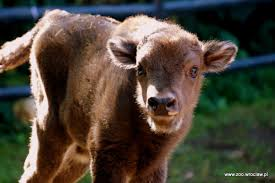
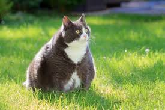

Star Wars: Last Jedi 2017
Opis filmu
Dawno temu w galaktyce fajny film To tylko bazowa płaca. Może ulec powiększeniu o kolejne 6 milionów, jeśli film przekroczy granicę 900 milionów dolarów wpływów na całym świecie. Disney wierzy, że solowy film o przygodach bohaterki wygra finansową (i artystyczną zapewne też) rywalizację z "Wonder Woman". Ma w tym pomóc również Jac Schaeffer, autorka "Nasty Women", czyli kobiecej wersji "Parszywych drani" z Anne Hathaway i Rebel Wilson w rolach głównych, która napisze scenariusz. Filmu o Czarnej Wdowie fani domagali się od jej debiutu w MCU. Kevin Feige cały czas obiecywał, że tak się stanie. Ale plany nieustannie odsuwane były w czasie. Dopiero niedawno wytwórnia w ogóle zgodziła się na produkcję widowiska, w którym główna rola powierzona została kobiecie. I nie jest to "Black Widow", ale "Captain Marvel". Studio tak długo zwlekało z oddaniem kobiecie pozycji protagonistki, że w efekcie przegrało wyścig. Dla wielu kwintesencją żeńskiego widowiska o superbohaterkach stała się "Wonder Woman". . Oczywiście na chwilę obecną nie wiemy nic na temat potencjalnej fabuły. W komiksowym uniwersum Czarna Wdowa to Natasha Romanova - szpieg, która po raz pierwszy pojawiła się w roku 1964 jako przeciwnik Tony'ego Starka. Kobieta przegrała pojedynek z superbohaterem, ale jej postać spodobała się na tyle, że powróciła w kolejnych albumach z czasem przechodząc na stronę dobra.W MCU zadebiutowała w "Iron Manie 2" i od tamtej pory pojawiała się wielokrotnie w kolejnych widowiskach Marvela.
Aktorzy
-
Marta Stolarz Gwiazda miałaby się wcielić w matkę chłopca cierpiącego na śmiertelnie niebezpieczną alergię słoneczną. Aby zapewnić chłopcu idealne warunki do życia, kobieta odseparowuje się od reszty rodziny. Gdy w sąsiedztwie dochodzi do zaginięcia dziewczynki, egzystencja matki i syna zostaje zaburzona. Film będzie reżyserskim debiutem fotografa Gregory'ego Crewdsona.
-

Marta Stolarz Gwiazda miałaby się wcielić w matkę chłopca cierpiącego na śmiertelnie niebezpieczną alergię słoneczną. Aby zapewnić chłopcu idealne warunki do życia, kobieta odseparowuje się od reszty rodziny. Gdy w sąsiedztwie dochodzi do zaginięcia dziewczynki, egzystencja matki i syna zostaje zaburzona. Film będzie reżyserskim debiutem fotografa Gregory'ego Crewdsona.
Recenzje
Marta: "polecam" j debiutu w MCU. Kevin Feige cały czas obiecywał, że tak się stanie. Ale plany nieustannie odsuwane były w czasie. Dopiero niedawno wytwórnia w ogóle zgodziła się na produkcję widowiska, w którym główna rola powierzona została kobiecie. I nie jest to "Black Widow", ale "Captain Marvel". Studio tak długo zwlekało z oddaniem kobiecie pozycji protagonistki, że w efekcie przegrało wyścig. Dla wielu kwintesencją żeńskiego widowiska o superbohaterkach stała się "Wonder Woman". . Oczywiście na chwilę obecną nie wiemy nic na temat potencjalnej fabuły. W komiksowym uniwersum Czarna Wdowa to Natasha Romanova - szpieg, która po raz pierwszy pojawiła się w roku 1964 jako przeciwnik Tony'ego Starka. Kobieta przegrała pojedynek z superbohaterem, ale jej postać spodobała się na tyle, że powróciła w kolejnych albumach z czasem przechodząc na stronę dobra.W MCU zadebiutowała w "Iron Manie 2" i od tamtej pory pojawiała się wielokrotnie w kolejnych widowiskach Marvel